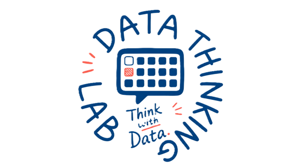

01
EXPLORATORY DATA ANALYSIS
자료탐색분석
데이터를 관찰하고 시각화하며, 분석 질문을 발견하는 탐색적 사고를 익힙니다.
DATA THINKING LAB · COURSE HUB
경기대학교 응용통계전공 2026학년도 2학기 강의 포털입니다. 수강 과목을 선택하면 주차별 강의와 슬라이드로 이동합니다.

SELECT A COURSE
과목별 사이트는 독립적으로 운영됩니다.
SHARED LEARNING RESOURCES
자료탐색분석 · 통계컨설팅의 이해
PROMPT WRITING & VIBE CODING
AI에게 목적·과업·맥락·출력 형식을 전달하는 PTCO 프레임워크, 역질문, 완료 기준과 반복 수정 방법을 살펴보는 참고 자료입니다.
GITHUB · DEPLOYMENT & PORTFOLIO
기말 프로젝트를 GitHub Pages로 배포하고, README와 개인 프로필을 활용하여 지속적인 포트폴리오로 관리하는 22페이지 강의 자료입니다.